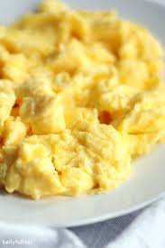

Scrambled Eggs Recipe

Scrambled Eggs
Scrambled eggs are a simple, nutrious and tasty meal that onyone can make with just a tiny bitof practice.
Ingredients
- 1 tablespoon of butter
- 3 eggs
- Salt
- Green onion
Steps
- Place a pan on low-medium heat and let sit.
- Chop green onion.
- Drop 1 tablespoon of butter onto the pan.
- Crack three eggs into a bowl and add salt. Beat the eggs for aproximately 20 seconds.
- Pour eggs onto pan and use rubber spatula and stir periodally.
- Mix eggs around until cooked.
- Place eggs on plate, add salt and chopped green onion.
- Serve and enjoy.